Wine Quality(White) Dataset
Lets predict the quality of wines
Contents
Data preprocessing
white_data = readtable('winequality-white.csv'); % Check Missing values sum(ismissing(white_data)) % there are no missing values in any column of this dataset. % No need of data preprocessing % All Attributes are numeric % The quality is the target column of this dataset. It takes 9 values % 1 to 9.
ans =
0 0 0 0 0 0 0 0 0 0 0 0
% Quality distribution tabulate(white_data.quality) % Split into train and target data names=white_data.Properties.VariableNames; inputNames={names{1,1:end-1}}; outputNames={names{end}}; X = white_data{:,inputNames}; y = white_data{:,outputNames};
Value Count Percent
1 0 0.00%
2 0 0.00%
3 20 0.41%
4 163 3.33%
5 1457 29.75%
6 2198 44.88%
7 880 17.97%
8 175 3.57%
9 5 0.10%
Exploratory Data Analysis
for k=1:length(inputNames) colData = X(:,k); figure(k) histogram(colData); xlabel(inputNames(k)); ylabel('Count'); end % Distribution of target variable figure(k+1) histogram(y) xlabel(outputNames(1)); ylabel('Count');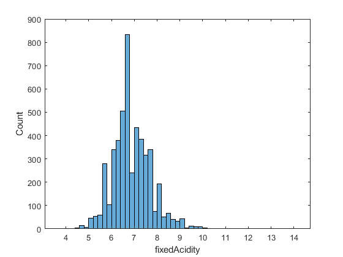 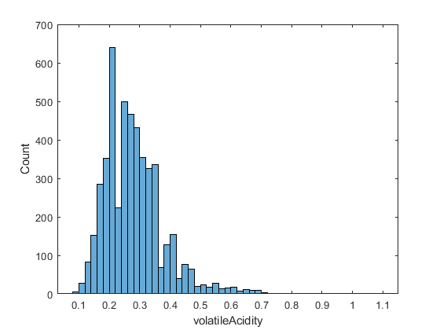 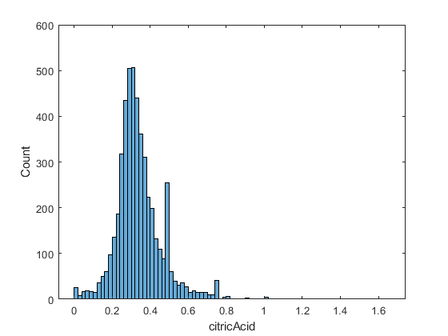 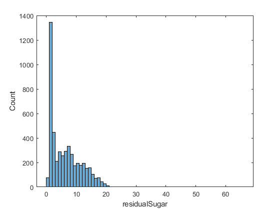 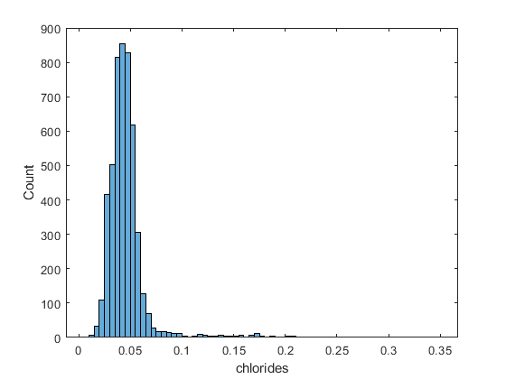 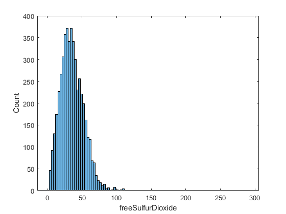 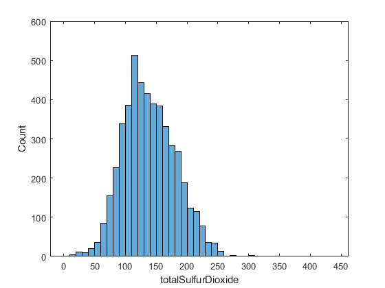 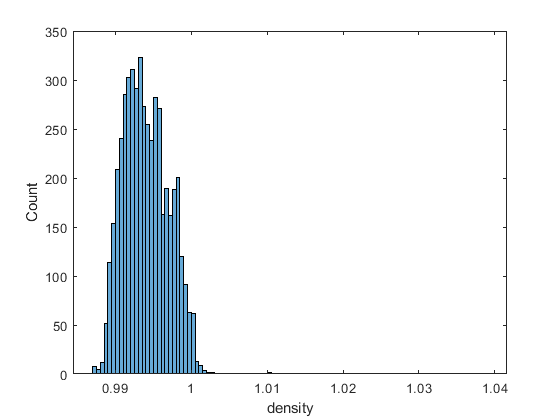 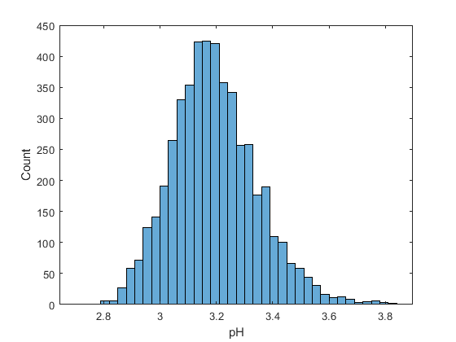 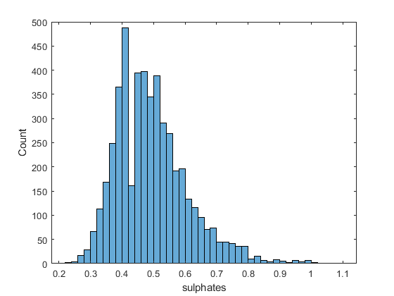 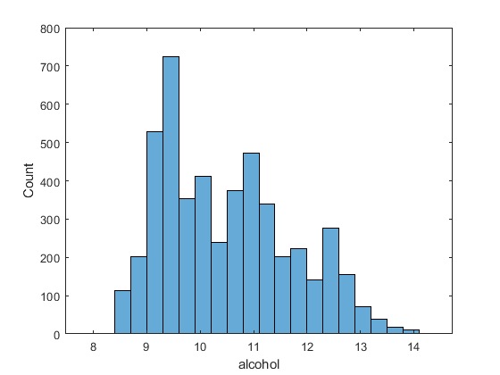 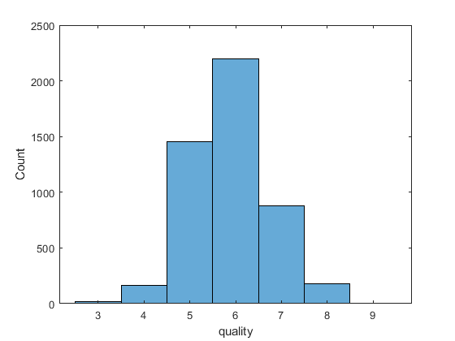
Regression Tree
rng(5); % For reproducibility % Set aside 90% of the data for training cv = cvpartition(height(white_data),'holdout',0.1); t = RegressionTree.template('MinLeaf',5,'Surrogate','on'); mdl = fitensemble(X(cv.training,:),y(cv.training,:),'LSBoost',500,t,... 'PredictorNames',inputNames,'ResponseName',outputNames{1},'LearnRate',0.01); L = loss(mdl,X(cv.test,:),y(cv.test),'mode','ensemble'); fprintf('Mean-square testing error = %f\n',L);
Mean-square testing error = 0.387999
Plot Fit Against Training Data
figure(1); % plot([y(cv.training), predict(mdl,X(cv.training,:))],'LineWidth',2); plot(y(cv.training),'b','LineWidth',2), hold on plot(predict(mdl,X(cv.training,:)),'r.-','LineWidth',1,'MarkerSize',15) % Observe first hundred points, pan to view more xlim([0 100]) legend({'Actual','Predicted'}) xlabel('Training Data point'); ylabel('Median Wine quality');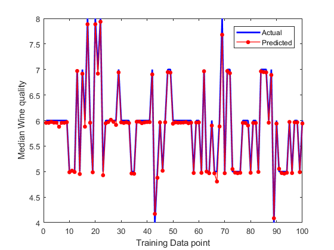
Plot Predictor Importance
[predictorImp,sortedIndex] = sort(mdl.predictorImportance); figure(2); barh(predictorImp) set(gca,'ytickLabel',inputNames(sortedIndex)) xlabel('Predictor Importance')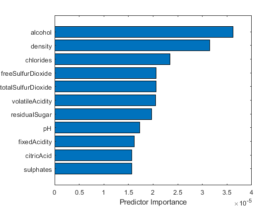
Plot Predictor Association
[impGain,predAssociation] = predictorImportance(mdl); figure; imagesc(predAssociation); title('Predictor Association Estimates'); colorbar; h = gca; h.XTickLabel = mdl.PredictorNames; h.XTickLabelRotation = 45; h.TickLabelInterpreter = 'none'; h.YTickLabel = mdl.PredictorNames;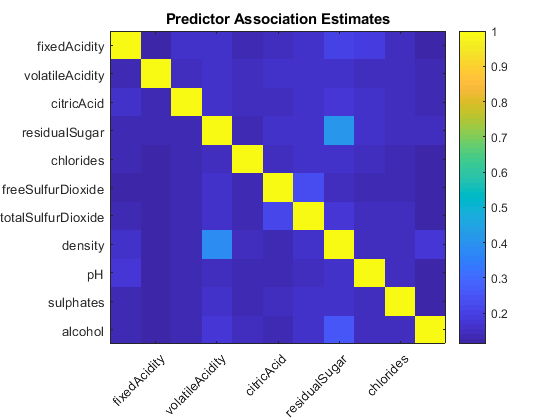
Plot Error
figure(3); trainingLoss = resubLoss(mdl,'mode','cumulative'); testLoss = loss(mdl,X(cv.test,:),y(cv.test),'mode','cumulative'); plot(trainingLoss), hold on plot(testLoss,'r') legend({'Training Set Loss','Test Set Loss'}) xlabel('Number of trees'); ylabel('Mean Squared Error'); set(gcf,'Position',[249 634 1009 420])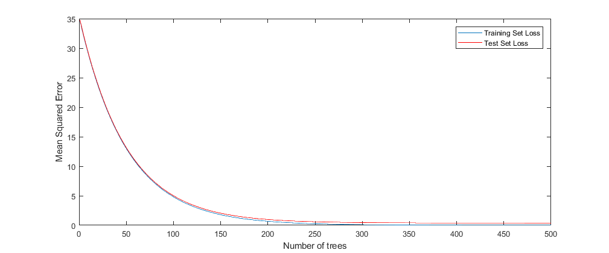
Regularize and Shrink the Ensemble
Try two different regularization parameter values for lasso
mdl = regularize(mdl,'lambda',[0.001 0.1]); disp('Number of Trees:') disp(sum(mdl.Regularization.TrainedWeights > 0))
Number of Trees: 303 26
mdl = shrink(mdl,'weightcolumn',2); disp('Number of Trees trained after shrinkage') disp(mdl.NTrained)
Number of Trees trained after shrinkage
26
Lasso Regression
[beta, FitInfo] = lasso(X,y,'Standardize',true,'CV',10,'PredictorNames',inputNames); lassoPlot(beta,FitInfo,'PlotType','Lambda','XScale','log'); hlplot = get(gca,'Children'); % Generating colors for each line in the plot colors = hsv(numel(hlplot)); for ii = 1:numel(hlplot) set(hlplot(ii),'color',colors(ii,:)); end set(hlplot,'LineWidth',2) set(gcf,'Units','Normalized','Position',[0.2 0.4 0.5 0.35]) legend('Location','Best')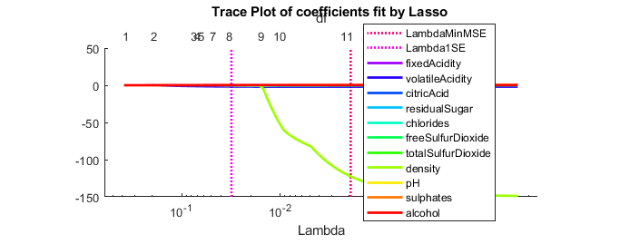
Important Predictors
lam = FitInfo.Index1SE; isImportant = beta(:,lam) ~= 0; disp(inputNames(isImportant))
Columns 1 through 4
'fixedAcidity' 'volatileAcidity' 'residualSugar' 'chlorides'
Columns 5 through 8
'freeSulfurDioxide' 'pH' 'sulphates' 'alcohol'
Linear model
mdlFull = fitlm(X,y,'Intercept',false); disp(mdlFull) disp(['Lasso MSE: ', num2str(FitInfo.MSE(lam))]) disp(['Full MSE: ', num2str(mdlFull.MSE)])
Linear regression model:
y ~ x1 + x2 + x3 + x4 + x5 + x6 + x7 + x8 + x9 + x10 + x11
Estimated Coefficients:
Estimate SE tStat pValue
___________ __________ _______ ___________
x1 -0.050591 0.015075 -3.3558 0.00079725
x2 -1.9585 0.11389 -17.196 2.1443e-64
x3 -0.029349 0.096165 -0.3052 0.76023
x4 0.024988 0.0025917 9.6417 8.3209e-22
x5 -0.94258 0.54302 -1.7358 0.08266
x6 0.0047908 0.00083903 5.7099 1.1972e-08
x7 -0.00087763 0.0003731 -2.3523 0.018699
x8 2.042 0.3533 5.7799 7.9371e-09
x9 0.1684 0.083596 2.0144 0.044022
x10 0.41645 0.097328 4.2789 1.9143e-05
x11 0.36563 0.01112 32.88 2.2363e-214
Number of observations: 4898, Error degrees of freedom: 4887
Root Mean Squared Error: 0.756
Lasso MSE: 0.58148
Full MSE: 0.57179
Support Vector Machine
MdlStd = fitrsvm(X,y,'Standardize',true); lStd = resubLoss(MdlStd); MdlLin = fitrsvm(X,y,'Standardize',true,'KFold',5); MdlGau = fitrsvm(X,y,'Standardize',true,'KFold',5,'KernelFunction','gaussian'); mseLin = kfoldLoss(MdlLin); mseGau = kfoldLoss(MdlGau);
Neural Network using App
% Solve an Input-Output Fitting problem with a Neural Network % Script generated by Neural Fitting app % % This script assumes these variables are defined: % % X - input data. % y - target data. x = X'; t = y'; % Choose a Training Function % For a list of all training functions type: help nntrain % 'trainlm' is usually fastest. % 'trainbr' takes longer but may be better for challenging problems. % 'trainscg' uses less memory. Suitable in low memory situations. trainFcn = 'trainlm'; % Levenberg-Marquardt backpropagation. % Create a Fitting Network hiddenLayerSize = 10; net = fitnet(hiddenLayerSize,trainFcn); % Setup Division of Data for Training, Validation, Testing net.divideParam.trainRatio = 70/100; net.divideParam.valRatio = 15/100; net.divideParam.testRatio = 15/100; % Train the Network [net,tr] = train(net,x,t); % Test the Network y = net(x); e = gsubtract(t,y); performance = perform(net,t,y) % View the Network % view(net); % Plots figure, plotperform(tr) figure, plottrainstate(tr) figure, ploterrhist(e) figure, plotregression(t,y)
performance =
0.4684
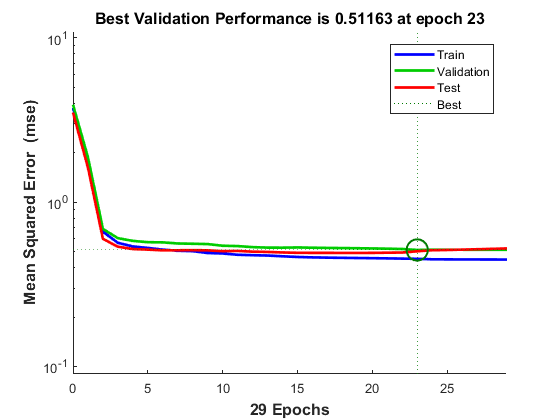 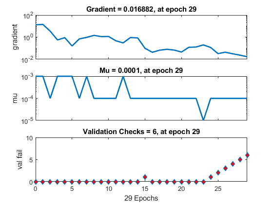 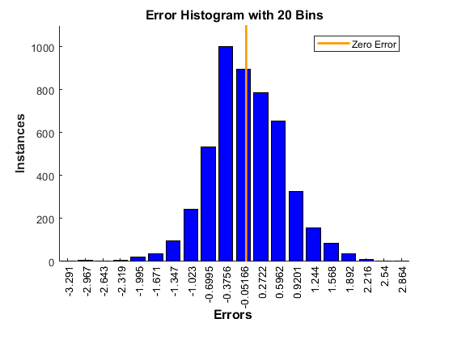 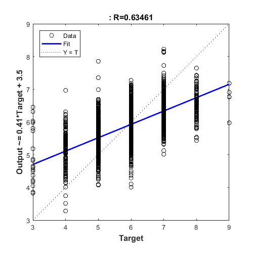